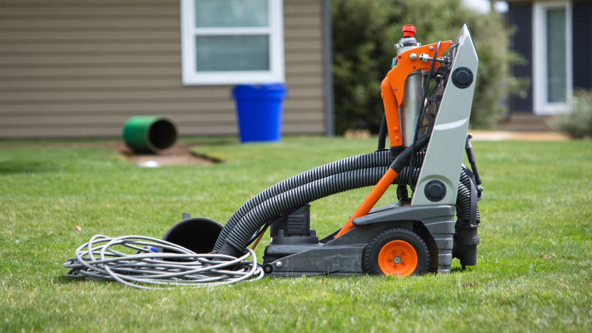
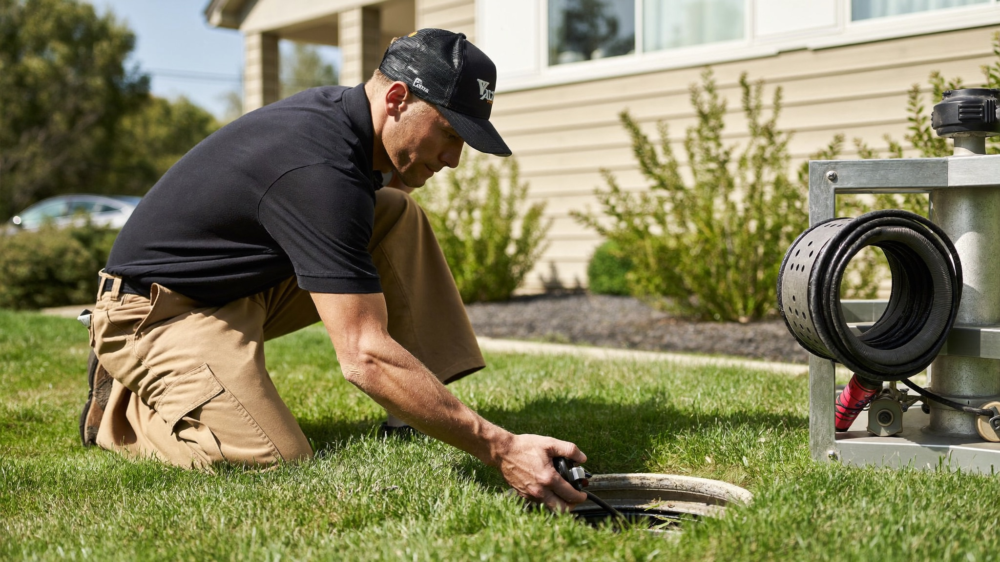

385.853.8116


Sunny Home Services provides complete sewer and drain services in West Jordan, from a single slow-draining sink to a collapsed main line under the front yard. Along the Wasatch Front, drains and sewer lines take a beating: mature tree roots in older neighborhoods, hard water scale, and shifting clay soils all work against the pipes buried under your home.
Whether you're near Jordan Landing, Oquirrh, or the established streets around Gardner Village, our licensed plumbers diagnose the real cause of the backup and fix it right the first time. From routine drain cleaning to trenchless sewer repair and camera inspection, one local team handles the whole system.

Sunny Home Services’ plumbers are licensed, background-checked, and experienced in the specific ways Wasatch Front sewer and drain systems fail. Underground pipes here face a demanding mix of soil, water, and tree conditions you don’t find everywhere.
In West Jordan, that means a few very specific stress factors:
Because we service sewer and drain systems under these conditions every day, we understand how West Jordan homes are plumbed, how the local soil behaves, and where backups tend to start.
If you’re searching “drain and sewer services near me”, with Sunny Home Services you’re getting a local team that doesn’t just clear the immediate clog: we find why it happened and fix the root cause. That means fewer repeat backups and a system that keeps flowing.
Sewer and drain problems in West Jordan usually trace back to a handful of recurring causes driven by soil, water, and the age of the home.
Utah’s hard water and heavy clay soils create conditions that wear on buried pipe. Other local factors add up too: mature trees hunt for water in older neighborhoods, ground movement stresses joints, and decades of grease and mineral buildup slowly narrow the lines.
Sunny Home Services’ plumbers are frequently called out to address:
In West Jordan specifically, we see problems tied to both newer and older homes:
Across the Salt Lake Valley, a camera inspection is often the fastest way to see exactly what’s happening underground before you spend money guessing.

Knowing whether your West Jordan line needs a simple cleaning, a targeted repair, or a full replacement comes down to the condition of the pipe, how often it backs up, and what a camera inspection actually shows underground.
A one-time clog is usually a cleaning job. Recurring backups, roots, or cracked pipe point toward repair or replacement. If your line is old clay or cast iron and failing in multiple spots, replacement is often the more cost-effective path than repeated emergency clearings.
Choosing a sewer and drain company means finding a team that shows up fast, diagnoses accurately, and prices the work clearly. Sunny Home Services delivers the responsiveness of a large company with the accountability of a local business.
We deliver:
In West Jordan, a sewer backup doesn’t wait for business hours, and a slow response can mean water damage inside the home. Fast, accurate service protects your property.
Unlike many drain cleaning companies, we prioritize communication. You know who’s coming, when they’ll arrive, and exactly what work’s being done, no surprises.
Calling Sunny Home Services for sewer and drain service means same-day response with clear communication and fast action from the first interaction.
Here’s what happens:
Most drain and sewer calls are resolved in a single visit because our trucks carry the cabling, jetting, and camera equipment to handle common jobs on the spot, minimizing the mess and downtime in your home.

The offers from our door hanger, redeemable when you book. Mention them when you call.

If your drains are slow or your sewer keeps backing up, don’t wait for a full overflow inside the house. Call now or book online to get your drains flowing and your sewer line back to health, fast!